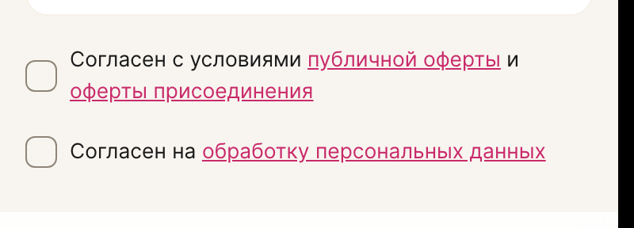
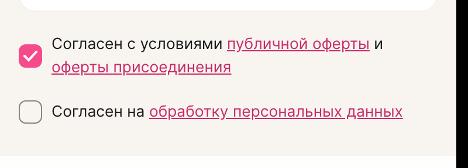
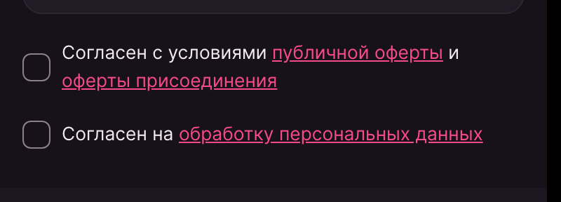
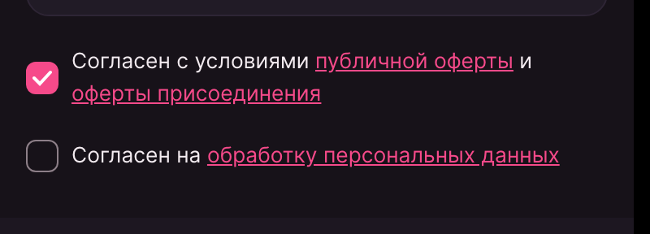
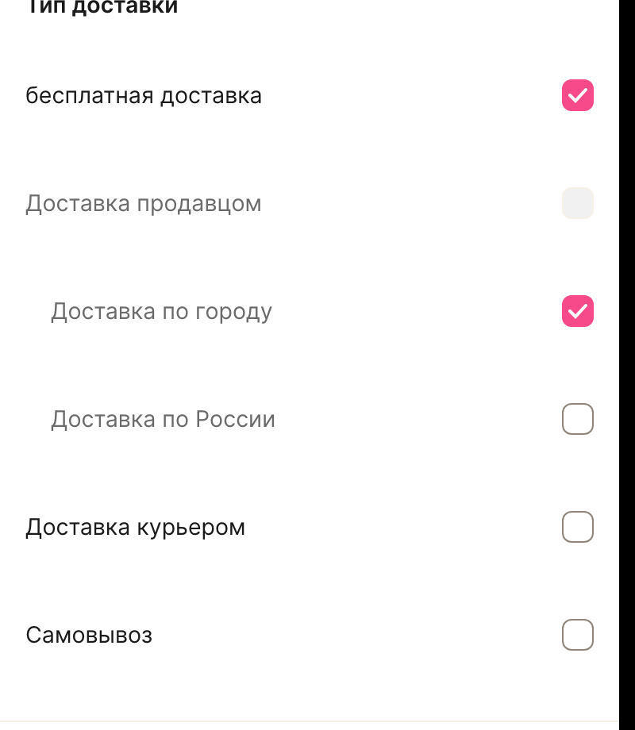
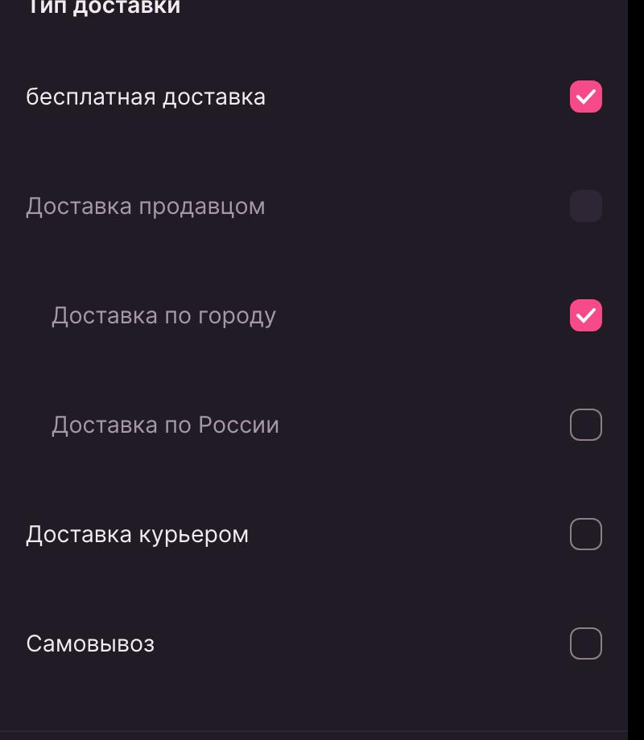
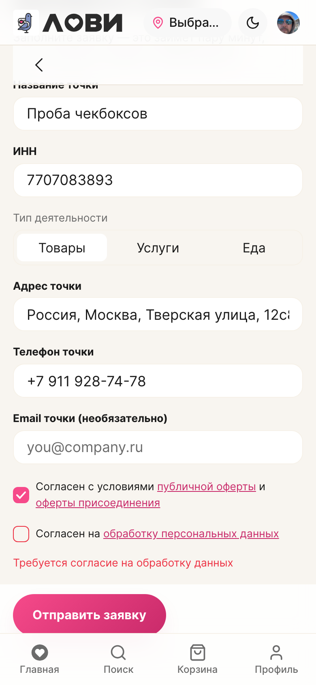

LOVII · lovii-app · киты и токены
Чекбоксы согласий в заявке «Добавить точку» не рисовались вовсе — пустой бокс был невидим, а ошибка согласия не читалась текстом. Причина в одном несуществующем токене. Сделан единый компонент кита для светлой и тёмной темы и применён ко всем чекбоксам клиента.
В форме заявки два пункта согласия — оферта и персональные данные. Пустой чекбокс не имел ни рамки, ни фона: отметить его «на глаз» было невозможно, а при попытке отправить заявку с экрана исчезала и причина отказа (проп error лишь красил рамку несуществующего бокса).
| Свойство | Было | Ожидалось |
|---|---|---|
| Рамка бокса | не рисовалась | 1.5px, видимая |
| Фон (не отмечен) | прозрачный | прозрачный |
| Текст ошибки под пунктом | отсутствовал | красная подпись |
Компонент согласия ссылался на токен --border-normal-strong, которого в дизайн-системе нет: в таблице токенов определён только --border-normal-stong — с опечаткой. Неизвестная переменная внутри border делает декларацию недействительной целиком, поэтому рамка не рисовалась, а не «рисовалась серой».
/* BusinessOfferCheckbox.vue — было */ &__mark { border: 1.5px solid var(--border-normal-strong); /* токена нет → border обнуляется */ background: transparent; /* заливка только в :checked */ } /* scss/tokens.scss — что реально было в ДС */ --border-normal-default: var(--lv-line); --border-normal-stong: var(--lv-line); /* опечатка в имени */ --border-normal-subtle: var(--lv-line-2);
Родственная проблема нашлась у фильтров каталога: там был свой span.checkbox с 18px и другими токенами — визуально чекбокс существовал, но это был второй, независимый стандарт.
Добавлен недостающий токен видимой нейтральной рамки и китовый компонент. Оба состояния живут на одних и тех же токенах, поэтому светлая и тёмная темы переключаются без отдельных правил.
| Токен | Светлая | Тёмная | Роль |
|---|---|---|---|
| --lv-line-strong | #8f8578 | #8d7f88 | рамка пустого бокса (≥3:1 к фону карточки) |
| --border-normal-strong | → lv-line-strong | → lv-line-strong | DS-токен, закрывает фантом |
| --content-normal-brand | #f64a8a | #f64a8a | заливка отмеченного бокса |
| --content-normal-on-brand | #ffffff | #ffffff | галочка на брендовой заливке |
Бокс 20×20, радиус 6, рамка 1.5px; отмеченный — брендовая заливка с галочкой; тап-таргет ≥44px, кольцо фокуса, состояния disabled и error. Реальный input[type=checkbox] остаётся в разметке — клавиатура, скринридеры и тестовые id работают как раньше. Варианты reverse и block дают вид «строка-настройка», поэтому фильтры каталога используют тот же компонент.






| Место | Что | Было | Стало |
|---|---|---|---|
| Заявка «Добавить точку», ×2 | согласие с офертой и с обработкой ПД | невидим | AppCheckbox |
| Фильтры каталога, ×6 | тип доставки | свой span | AppCheckbox |
| Профиль — push/e-mail | согласия-переключатели | switch | не чекбокс, не тронут |
Проверено на живом стенде: форма заполнена, отправка перехвачена на уровне сети — запрос засчитывался, но в базу ничего не уходило.

| Шаг | Результат |
|---|---|
| Замер бокса на стенде | светлая rgb(143,133,120) · тёмная rgb(141,127,136) · 20×20 r6 |
| Отмеченный бокс | rgb(246,74,138) с галочкой, обе темы |
| Гейтинг кнопки (live) | без согласия — запрос не ушёл; с обоими — ушёл |
| Юнит-тесты | 682 / 682 (88 файлов), +9 новых |
| Типы · линт · сборка | vue-tsc · eslint · vite build — чисто |
Правка вошла в локальный коммит 204dec9 вместе с прочей работой по профилю; в удалённую ветку пока не отправлялась. Тем же коммитом профиль перестроен — блок «Кабинеты» вынесен из списка навигации, поэтому карточка берёт подложку из общего паттерна структурно.